Integer factorization is believed to be intractable for classical computers, a fact that RSA encryption relies on directly. In 1994, Peter Shor showed that a quantum computer can factor integers in polynomial time by solving the related order-finding problem with a dedicated quantum circuit. In this project we implement Shor's algorithm from scratch in Qiskit, following Beauregard's design[2] for an order-finding circuit that uses only $2n+3$ qubits, the minimum known for a general-purpose implementation. We build every gate the circuit needs from first principles (the quantum Fourier transform, an adder, a modular adder, a controlled multiplier, and a controlled swap), verify each of them with targeted tests, and use the resulting circuit to successfully factor 15, 21, and 33 on a state-vector simulator.
Factoring an integer into its prime components is easy to state but, as far as anyone knows, impossible to solve efficiently on a classical computer: no algorithm exists today that factors integers in polynomial time. That hardness isn't just a curiosity: cryptosystems such as the RSA algorithm, named for Rivest, Shamir, and Adleman, rely on it directly, encrypting data under the assumption that factoring the product of two large primes is computationally infeasible.
Shor's algorithm, first proposed by Peter Shor in 1994[1], changes this picture: it factors integers in polynomial time by reducing factorization to order-finding, a problem a quantum computer can solve efficiently but a classical one cannot. A large enough, fault-tolerant quantum computer running Shor's algorithm could therefore break RSA outright.
Today's quantum hardware is nowhere near that point. The number of qubits available is still the binding constraint, so most research, including this project, focuses on reducing how many qubits the algorithm needs, rather than on factoring numbers of any practical size.
We implement Shor's algorithm in Python and Qiskit, following a paper by Beauregard[2] that describes a circuit for the order-finding step using $2n+3$ qubits. The full algorithm, including its classical bookkeeping, is as follows, where $N$ is the number to be factored:
Repeatedly calling this algorithm yields the full prime factorization of $N$. Steps 1, 2, 3, and 5 are entirely classical; only step 4 needs a quantum computer, since it is the only known way to find the order $r$ in polynomial time.
Our implementation builds up the order-finding circuit one gate at a time, each new gate reusing the ones built before it. That let us test every gate in isolation before relying on it to build the next one.
The first gate we need is the quantum Fourier transform (QFT), the quantum analog of the discrete Fourier transform. It encodes integers as phase shifts instead of basis states. State $\ket{0}$ in the ordinary encoding maps to $\ket{\phi(0)}$ in what we call the Fourier ($\phi$-) space: no phase shifts at all. $\ket{\phi(1)}$ is represented by consecutive phase shifts of $\pi$ radians each, $\ket{\phi(2)}$ by shifts of $\pi/2$ radians, and so on as the resolution of the phase shifts increases.
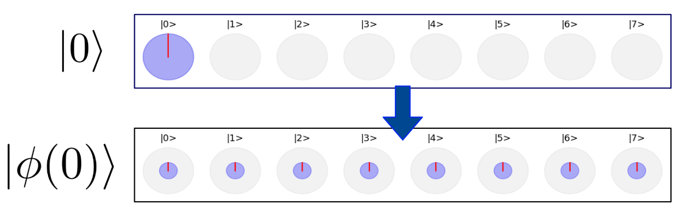
.">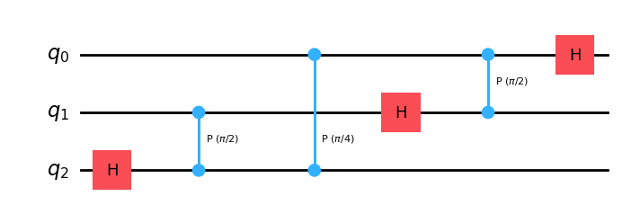
The QFT only needs Hadamard gates and controlled phase gates, applied recursively: apply a Hadamard to the most-significant qubit, apply a set of rotations each controlled by one of the remaining qubits, discard the most-significant qubit, and repeat with $n-1$ qubits. We tested the gate by encoding arbitrary integers into the $\phi$-space and confirming that the inverse QFT could recover them.
With integers encoded in the $\phi$-space, we can implement arithmetic. The adder gate performs addition in Fourier space; run in reverse, it performs subtraction.
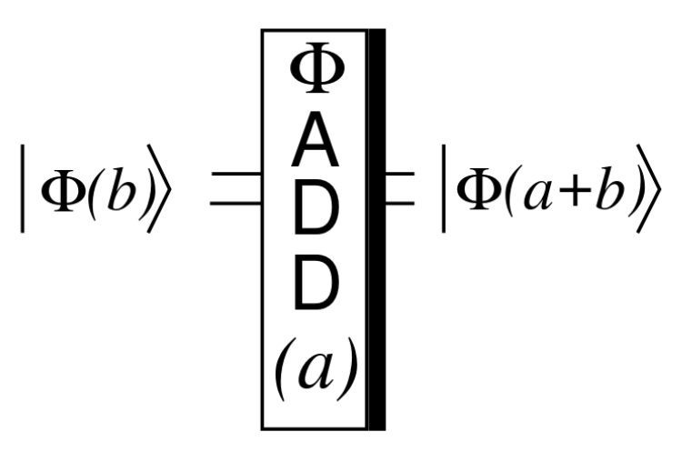
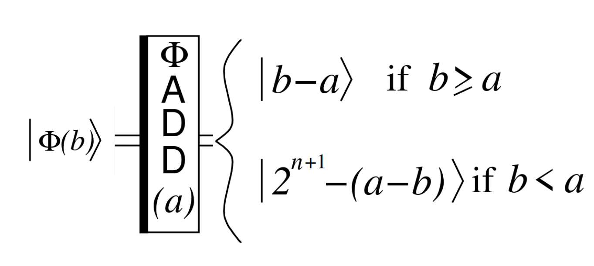
A compact representation of the adder gate, from Beauregard's paper.
Addition in the $\phi$-space turns out to be a handful of per-qubit rotations. Adding the integer 5 to a 3-qubit register already in the $\phi$-space, for example, takes 3 rotations, which can be left uncontrolled or controlled by one or two qubits as needed.
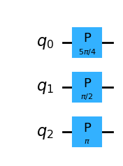
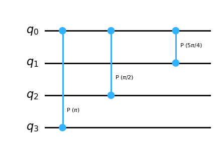
Our implementation of the adder gate on 3-qubit registers.
We tested both the adder and its inverse by encoding a register into the $\phi$-space with the QFT, applying addition or subtraction, and using the inverse QFT to check the result; subtraction needed a bit more care around the edge cases.
The modular adder gate builds on the plain adder above to compute $(b + a) \bmod N$. It runs the ordinary adder together with an extra ancilla qubit that tracks whether the addition overflowed past $N$, using that information to conditionally subtract $N$ back off, so the result always wraps around modulo $N$ instead of overflowing.
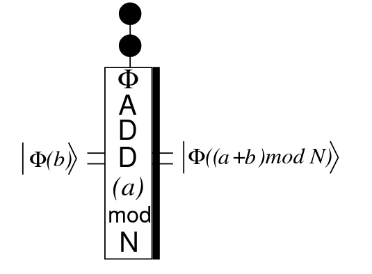
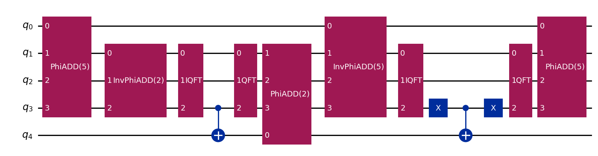
The controlled multiplier gate implements controlled modular multiply-and-add. Given two quantum registers $x$ and $b$ and a control qubit $c$, it maps $\ket{x}\ket{b} \to \ket{x}\ket{(b + a\cdot x) \bmod N}$ whenever $c=1$, for classical, known $a$ and $N$. If $b$ starts at $0$, the $b$ register simply becomes $(a \cdot x) \bmod N$.
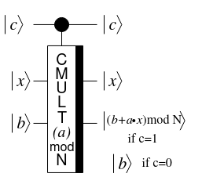
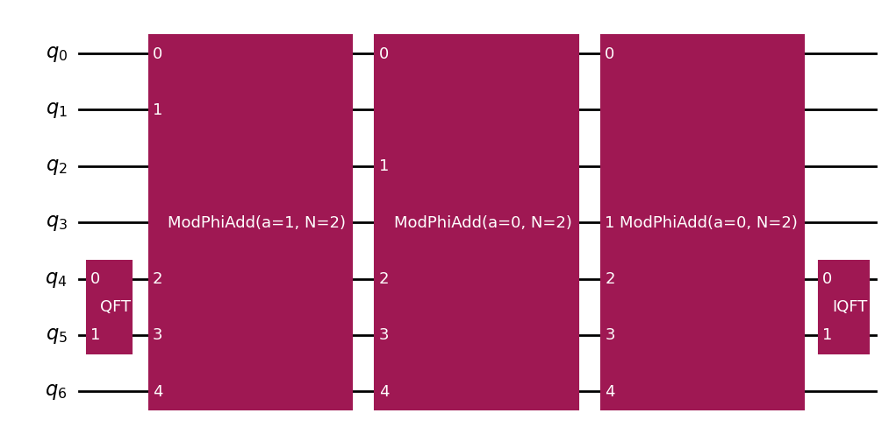
It reuses the gates built so far: a QFT moves the $b$ register into the $\phi$-space, then a chain of doubly-controlled modular adders is applied (the $i$-th controlled by both $c$ and the $i$-th qubit of $x$) before an inverse QFT moves $b$ back to the regular space. We tested it with randomized state-vector simulations, sweeping the control qubit over $0$ and $1$ and $x, b$ over random integers.
The simplest gate in the series: it swaps the contents of two equally-sized registers, controlled by an extra qubit. Under the hood it's just a chain of controlled swaps, each pairing qubits of matching significance across the two registers.
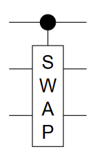
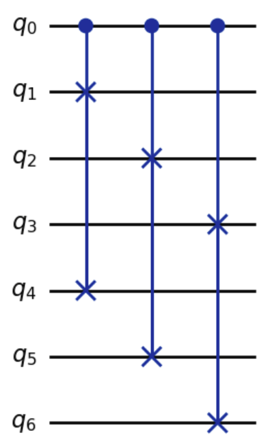
The controlled multiplier gate gets us to $\ket{x}\ket{b} \to \ket{x}\ket{b+(a\cdot x)\bmod N}$. What order-finding actually needs is a gate that takes $\ket{x} \to \ket{a\cdot x \bmod N}$: the controlled $U_a$ gate.
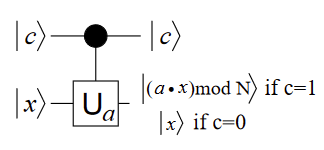
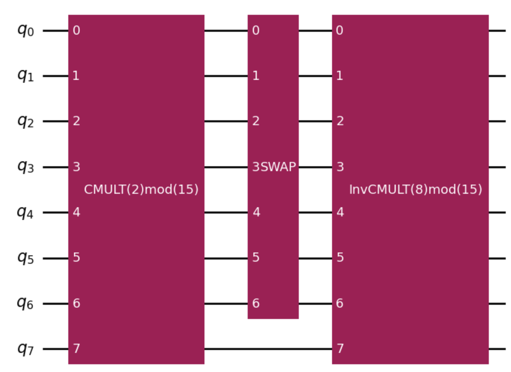
It chains a $\mathrm{CMULT}(a) \bmod N$ operation, a controlled swap, and an inverse $\mathrm{CMULT}(a^{-1} \bmod N)$ operation, taking $\ket{x}\ket{0}$ to $\ket{(a\cdot x)\bmod N}\ket{0}$:
$$ \begin{aligned} \ket{x}\ket{0} &\to \ket{x}\ket{(a \cdot x)\bmod N} \\ &\to \ket{(a \cdot x) \bmod N}\ket{x} \\ &\to \ket{(a \cdot x) \bmod N}\ket{(x - a^{-1} \cdot a \cdot x) \bmod N} \\ &= \ket{(a \cdot x) \bmod N}\ket{0} \end{aligned} $$We tested it by checking both registers came out correctly for a range of $x$, $a$, $N$, and register sizes.
To find the order of $a \bmod N$, we put $2n$ qubits into an equal superposition with Hadamard gates, then use them to control a sequence of $U_a$ gates, the $i$-th one applying $U_a(a^i \bmod N)$. This shifts the phases of the first $2n$ qubits so that, after an inverse QFT, some measurement outcomes become much more likely than others. Measuring those $2n$ qubits then reveals the period of $a$ directly, as we'll see in the results below.
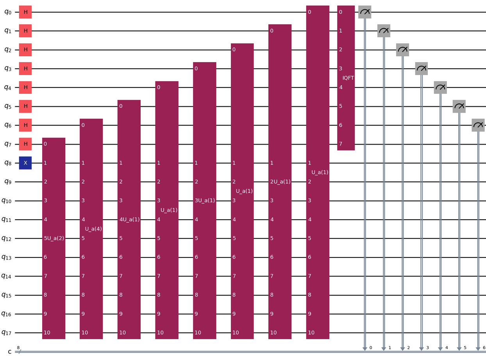
The qubit count can be reduced further with the "one-qubit trick", which merges the first $2n$ qubits of the circuit above into a single, reused qubit, without changing the distribution over measurement outcomes. It relies on two facts.
First, consider the $2n$ qubits that get an inverse QFT applied before being measured. By the deferred measurement principle[3], an equivalent circuit is obtained by moving each measurement earlier, right before that qubit's controlled-phase gates, and making those gates classically controlled by the measurement outcome instead. Second, once measurements happen this early, the $2n$ qubits can be merged into one, since nothing later in the circuit depends on more than one of them being alive at a time.
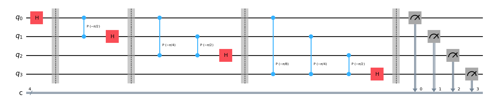
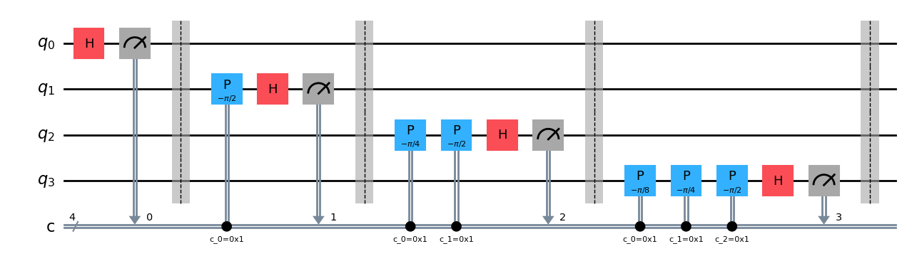
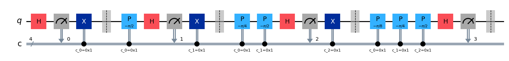
Applying this trick to the $4n+2$-qubit circuit, and accounting for the $U_a$ gates, yields an equivalent circuit with just $2n + 3$ qubits, the minimum known for a general-purpose order-finding circuit.
We evaluated the circuit on a quantum simulator, factoring 15, 21, and 33 with a fixed choice of $a$ for simplicity.
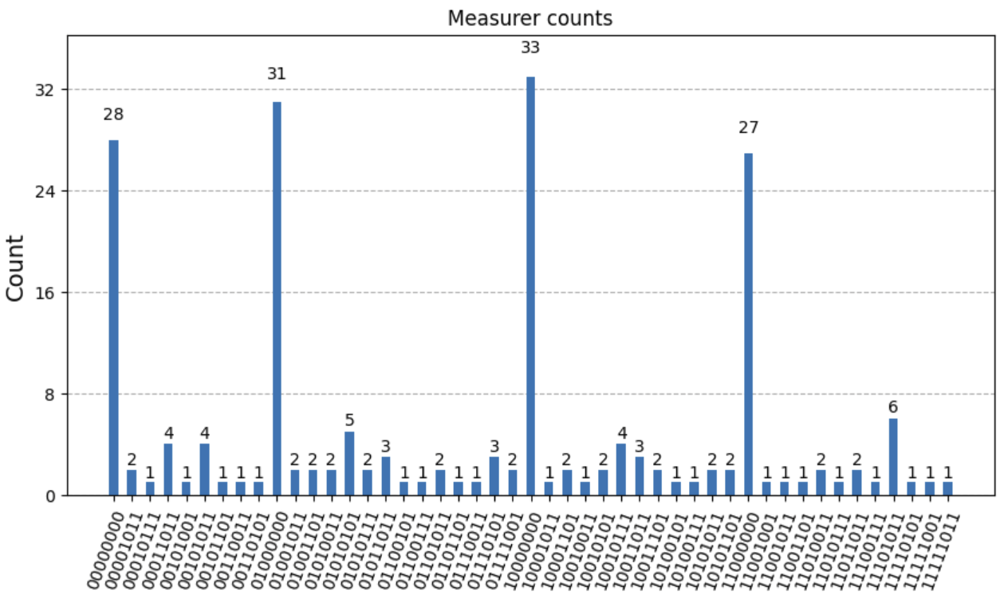
Factoring 15 with $a=2$ (200 shots, under a second to run) gives $r=4$ spikes in the counts.
$$ \begin{aligned} \gcd(N, a^{r/2}-1) &= \gcd(15,\ 2^{4/2}-1) = \gcd(15,3) = 3 \neq 1 \\ \gcd(N, a^{r/2}+1) &= \gcd(15,\ 2^{4/2}+1) = \gcd(15,3) = 5 \neq 1 \end{aligned} $$Both candidates divide 15, and $3 \times 5 = 15$, confirming the factorization.
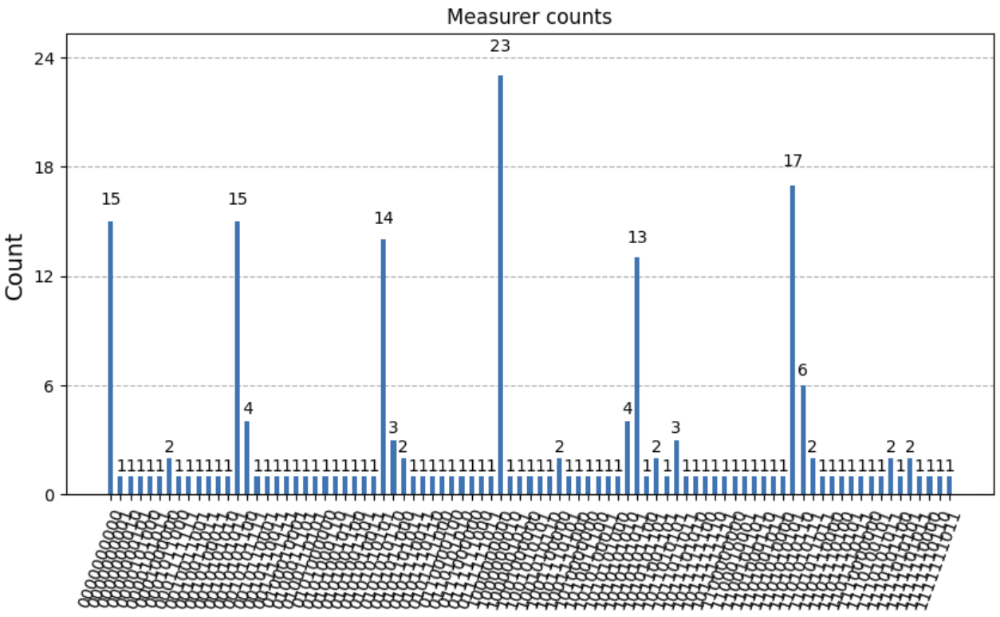
Factoring $N=21$ with $a=2$ (200 shots, roughly 10 seconds) gives $r=6$. The same calculation yields candidates 3 and 7, both divisors of 21, and $7 \times 3 = 21$ confirms the factorization.
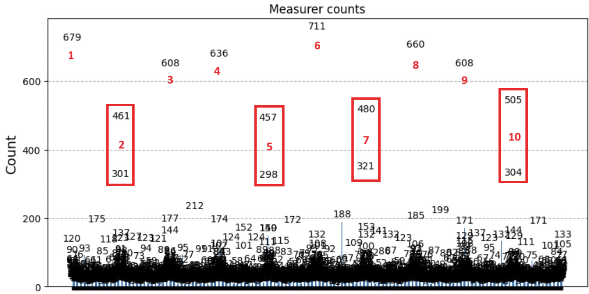
Factoring $N=33$ with $a=2$ is trickier: some peaks straddle two integers (highlighted in red in the report) and need to be combined into bins of size two to read off the correct $r=10$. But this $a$ doesn't work: $a^{r/2} = 2^5 = 32 \equiv -1 \pmod{33}$, so step 5 of the algorithm sends us back to try a different $a$.
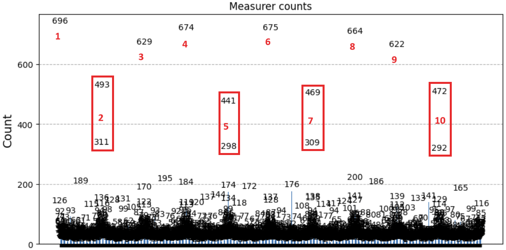
Trying again with $a=5$ gives $r=10$ once more, but this time $a^{r/2} = 5^5 = 3125 \equiv 23 \pmod{33} \neq -1$, so the algorithm can proceed. The resulting candidates 3 and 11 both divide 33, and $3 \times 11 = 33$ confirms the factorization.
We ended up with a working implementation of Shor's algorithm, but several things stand in the way of using it, or a variant of it, to factor genuinely large integers.
Factoring still requires a large number of qubits, and integers of the size used in real cryptographic keys are far out of reach for today's hardware. Closing that gap means both reducing the qubit count the circuit needs and building quantum computers with more qubits to spare.
The bigger obstacle, though, is quantum error correction: as the numbers being factored grow, the circuit depth grows with them, and reliably running a deeper circuit demands a large number of additional qubits dedicated purely to error correction.